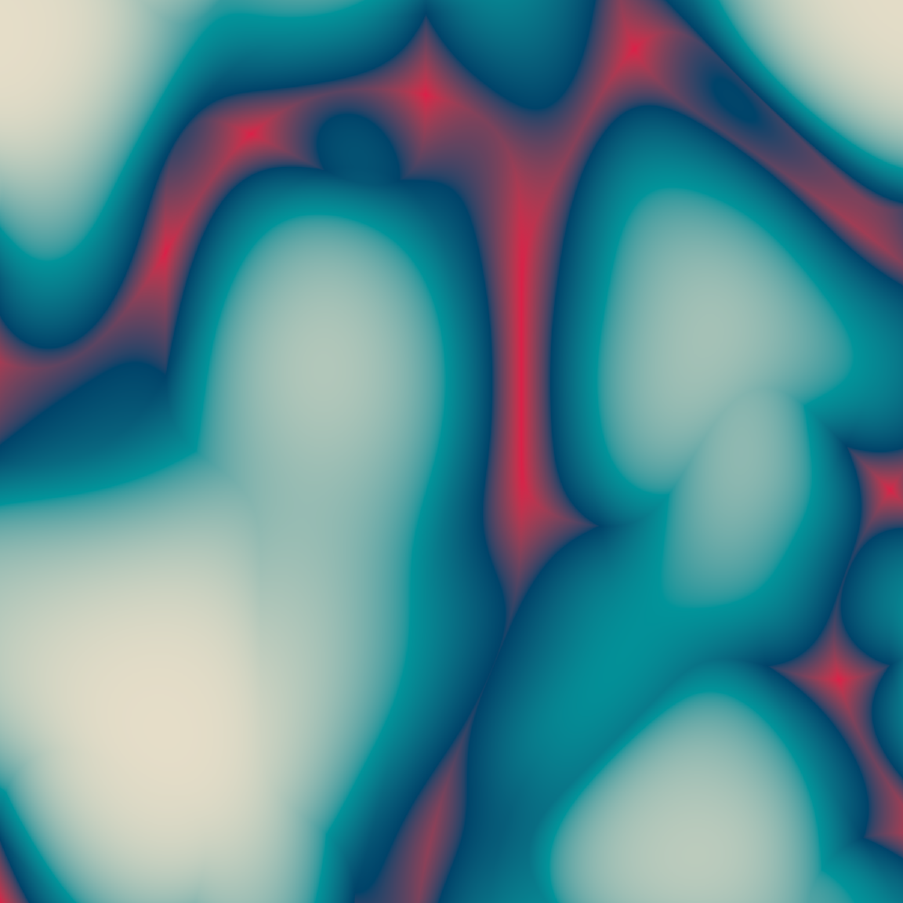
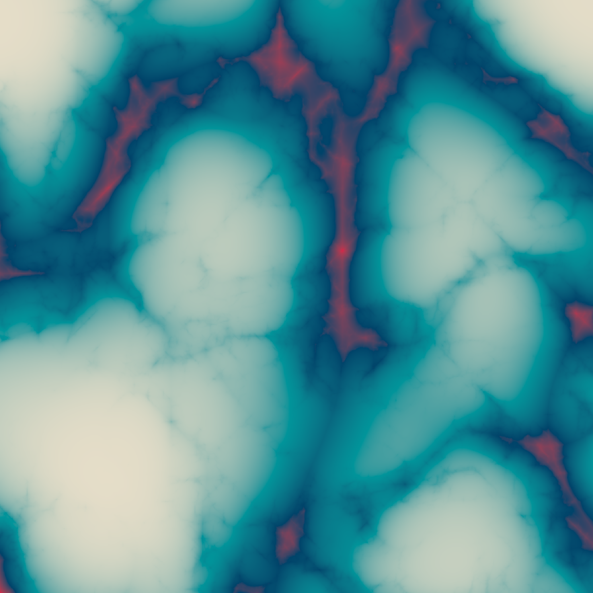
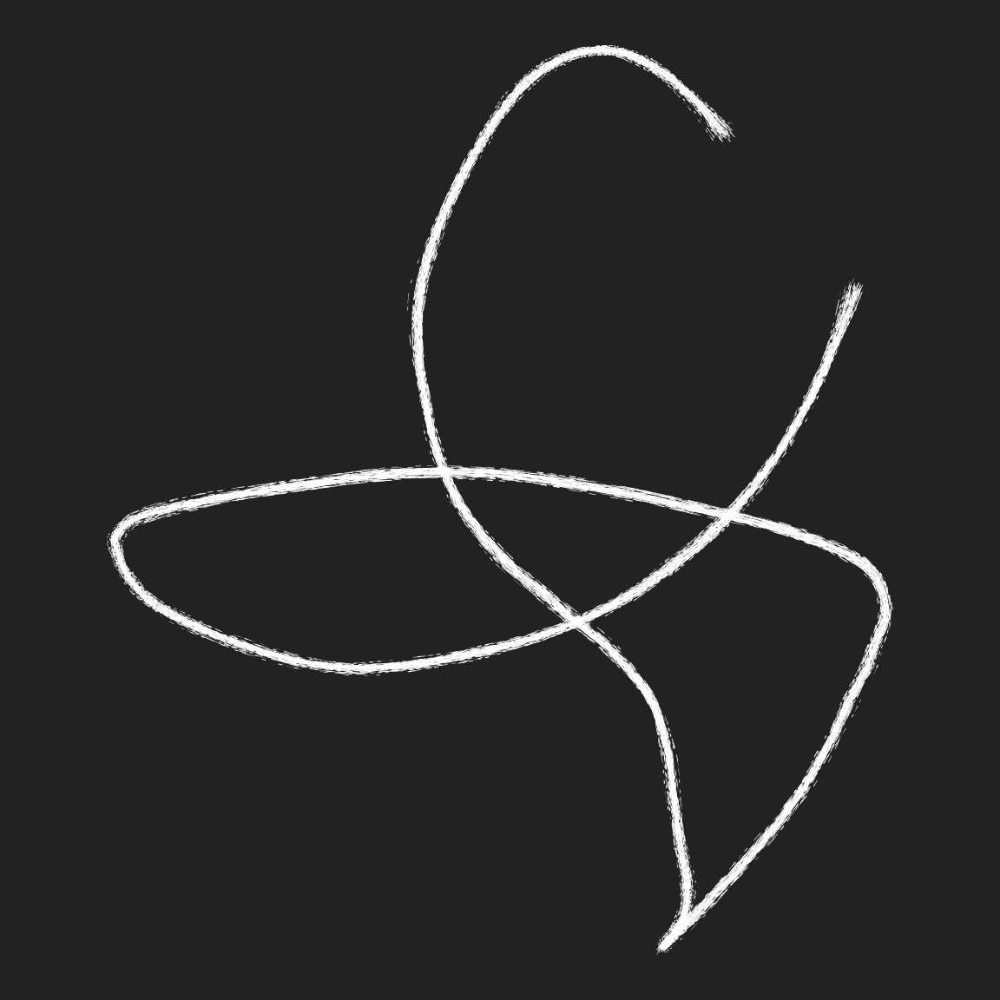
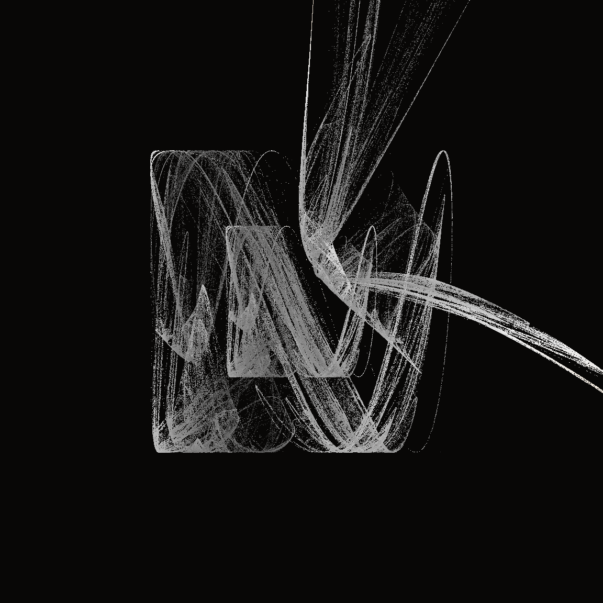
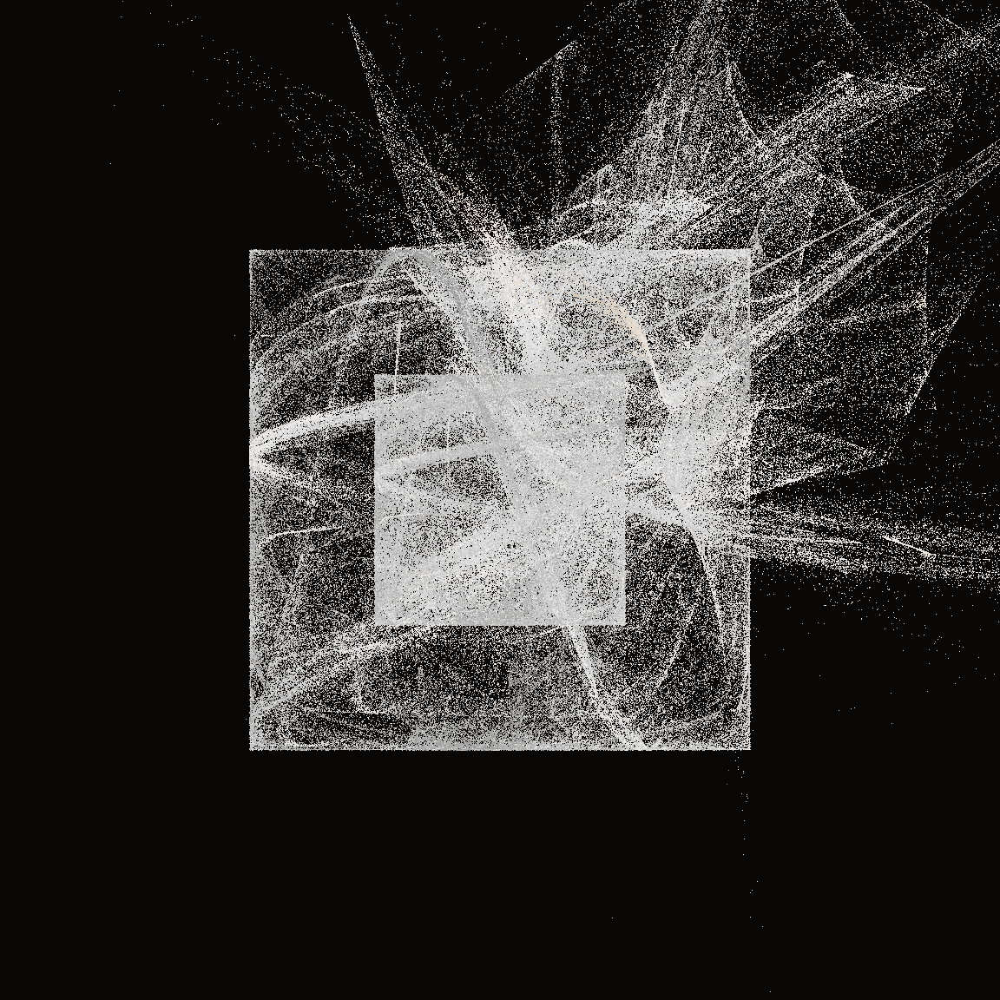

ART FROM CODE
Art is theft


Technique and art functions
polar_art(seed = 1, n = 500, palette = c("antiquewhite", "orange", "bisque"))
polar_art(seed = 1, n = 500, palette = c("red", "black", "white"))
polar_art(seed = 2, n = 50, palette = c("red", "black", "white"))


Composition and grammar


Our first system
- Writing art functions:
- First, play!
- Then: what varies?
- Variable things are arguments

Fractals in ambient
fractal_art(ridged, gen_simplex, seed = 2, octaves = 1)
fractal_art(ridged, gen_simplex, seed = 2, octaves = 2)
fractal_art(ridged, gen_simplex, seed = 2, octaves = 20)


Slightly misshapen objects

Perlin hearts

Textured lines
- Basic recipe:
- Dots not lines
- But have many noisy copies


Chaos game for unboxing



Rectangle subdivision

Mosaica

Voronoi tesselation

Voronoi baroque

Truchet tiles

Prelude with flametree

Adding glow


Dithering an image


Applying a mask


Displacement filters


Image blends